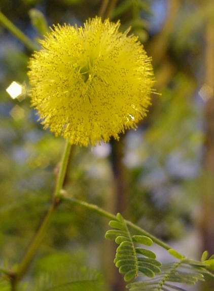

|
ECONOMICALLY
IMPORTANT PLANTS OF INDIA |
| Under-utilized Food and Fodder species and their wild relatives | Contributed by Ms.M.L Annapurna And Dr. Dhanapal, UAS, Bangalore |
Acacia farnesiana (L.) Willd.
----- Taxonomic Details

----- Correct Name
----- Classification
----- Synonyms
----- Common Names
Other Biological Details
----- Habit and Habitat
----- Diagnostic Features
----- Reproductive Biology
---------- Breeding System
---------- Phenology
---------- Pollinators
---------- Seed Biology
----------Seed Germination
------ Cultivation
----- Major Pests and Diseases
Economic Potential and Uses
----- Parts Used
----- Uses
----- Harvesting Practices
----- Produce and Products
----- Chemistry
----- Processing Techniques
----- Other uses
----- Economic Potential to the
Country
----- Export Potential
Miscellaneous Information
Literature
HABIT & HABITAT:
It is found all along the roads,
Coastal areas, Cultivated fields and Plains, Dry forest areas, Foot hills, Gardens
and Roadsides, Plains, River beds, Road sides, Run wild, Scrub forest, Shrubby
forest and waste land.
It is a native of tropical America, cosmopolitan. Brazil, China, India (Santal),
Java, Malaya, Mexico, Mexico (Kickapoo), Mexico (Warihio), Spain and Venezuela.
It cannot grow in the shade. It requires dry or moist soil and can tolerate
drought. Both A. farnesiana and its var. cavenia are extensively
cultivated for the essential oil in their flowers in and around Cannes, southern
France, which is the centre for production of the perfume. Assigned to the South
American Centre of Diversity, cassie (2n = 52, 104).
Biotic Zone: Himalaya,Tropics and West Coast.
Availability :
Misc: Bogada, Chamundi hills, Circars, Cooler places, Danpur, Deccan, Deogad,
Deolali, Hussenapuram, Ilhas, Khajari village, Kushalnagar, Kushtagi-Gangavati
Road, Mount Abu, Panaji, Pochammaralu, Raipur, Ram niwas garden, River Mandovi,
Subtropical, tar, Throughout India, Tropical regions, Umarkhed and Vada.
Country: America, India, Sri Lanka,Tropical America,Tropical Countries and West
Indies,
Zone: Central, North, North East, South and Westzone.
State: Andhra Pradesh, Arunachal Pradesh, Bihar, Goa Daman Diu, Himachal Pradesh,
Karnataka, Madhya Pradesh, Maharashtra, Rajasthan, Tamil Nadu and Uttar Pradesh.
District: Allahabad, Balaghat, Bangalore, Banswara, Bhilwara, Bombay, Carnatic,
Chamoli, Champaran, Chengalpattu, Coimbatore, DakshinKannada, Damoh, Dharmapuri,
Gulbarga, Hassan, Indore, Jabalpur, Jaipur, Jhalawar, Kodagu, Kullu, Kurnool,
Medak, Mysore, Nasik, Raichur, Raigarh, Raipur, Raisen, Rajnandgaon,
Ramnathapuram, Rewa, Salem, Shivpuri, Simla, Sindhudurg, Sirohi,
Tiruchchirappalli, Tiruchi, Tirunelveli, Trichurapalli and Yawatmal.
Taluk: Abu road and Kudal.
Status :
DIAGNOSTIC FEATURES :
An
evergreen shrub growing to 9m branches slightly zig-zag marked with raised pale
- brown or pale gray spots. Bark smooth, dark-grey. Pods 2-3 by 0.5 inch, sub
cylindric, dark brown when ripe; mesocarp pulpy, seeds numerous. Scented flowers. Wood
is heavy and hard . Thorny bush or small tree, 8 m tall; bark light brown,
rough; branches glabrous or nearly, purplish to gray, with very small glands;
stipules spinescent, usually short, up to 1.8 cm long, rarely longer, never
inflated; leaves twice pinnate, with a small gland on petiole and sometimes one
on the rachis near top of pinnae; pinnae 2–8 pairs, leaflets 10–12 pairs,
minute, 2–7 mm long, 0.75–1.75 mm wide, glabrous, leathery; flowers in
axillary pedunculate heads, calyx and corolla glabrous, scented; pod
indehiscent, straight or curved, 4–7.5 cm long, about 1.5 cm wide, subterete
and turgid, dark brown to blackish, glabrous, finely longitudinally striate,
pointed at both ends; seeds chestnut-brown, in 2 rows, embedded in a dry spongy
tissue, 7–8 mm long, ca 5.5 mm broad, smooth, elliptic, thick, only slightly
compressed; areole 6.5–7 mm long, 4 mm wide.
REPRODUCTIVE BIOLOGY
The scented flowers are hermaphrodite
(have both male and female organs).
Breeding System : MAJOR PESTS & DISEASES
Phenology :
The flowering takes place during November-May and also during August-March.
The
scented flowers are hermaphrodite (have both male and female organs).
Pollinators:
Bees.
Seed Biology :
Seed Germination :
The seed germinates
in 3 - 4 weeks at 25°c.
Cultivation:
Seed - best sown as soon as it is ripe in a sunny position in
a warm greenhouse. Stored seed should be scarified, pre-soaked for 12 hours
in warm water and then sown in a warm greenhouse in March. The seed germinates
in 3 - 4 weeks at 25°C. As soon as the seedlings are large enough to handle,
prick them out into individual pots and grow them on in a sunny position in
the greenhouse for their first winter. Plant them out in late spring or early
summer, after the last expected frosts, and consider giving them some protection
from the cold for their first winter outdoors. Cuttings of half-ripe wood with
a heel, July/August in individual pots in a frame. Over winter in a greenhouse
for the first winter and plant out in their permanent positions in late spring
or early summer.
Prefers a light sandy loam and a very sunny position sheltered from strong winds.
Plants can grow well in pure sand. Most species in this genus become chlorotic
on limey soils. Established plants are very drought tolerant. The species and
its cultivars are reported to exhibit tolerance to drought, high pH, heat, low
pH, salt, sand, slope, and Savannah. Plants tolerate a pH range from 5.0 to
8.0.
Whilst this species is not very tolerant of cold, being damaged by even a few
degrees of frost, the variety A. farnesiana cavenia seems to be more resistant
to both drought and frost.
It can fix Nitrogen. The plant prefers light (sandy), medium (loamy) and heavy
(clay) soils, requires well-drained soil and can grow in nutritionally poor
soil. The plant prefers acid, neutral and basic (alkaline) soils and can grow
in very acid, very alkaline and saline soils.
Pests:
Diseases:
Economic
Potential and Uses
Parts used:
Leaves,
Flowers, Fruits, Seeds, Bark, wood and Root .
Uses:
Harvesting
Practices :
A matured plant of 10 years old can yield 9 kg of flowers each year.
In a suitable climate, the trees begin to flower from their third year.
Produce and Products :
Adhesive,
Dye, Essential oil, Gum, Ink, Tannin, Wood.
Cassie perfume, Gum, agricultural implements, pegs, woodenware.
The wealth of India. 1948. p-4. A dictionary of Indian Raw Materials and Industrial Products. Raw Materials Vol:1 A-B. CSIR. New Delhi. India.